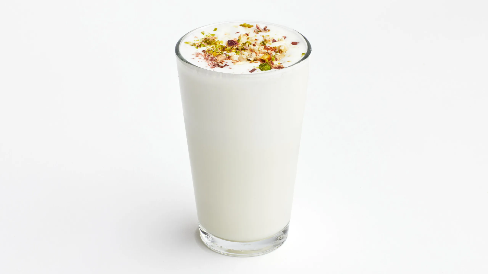

Lassi

Learn what a lassi drink is with this basic recipe for the popular Indian beverage. You can adjust the amount of yogurt or water for a thicker or thinner consistency. Garnish with fresh mint if desired
Ingredients
- Ice Cubes
- 1¾x cups plain yogurt
- 1½x cups ice water
- 6x cubes ice, crushed
- 2x teaspoons white sugar
- 1x pinch salt
Steps
- Fill 6 tall glasses with ice cubes
- Place yogurt, ice water, crushed ice, sugar, and salt in a blender
- Blend until frothy
- Pour over ice cubes in the glasses to serve